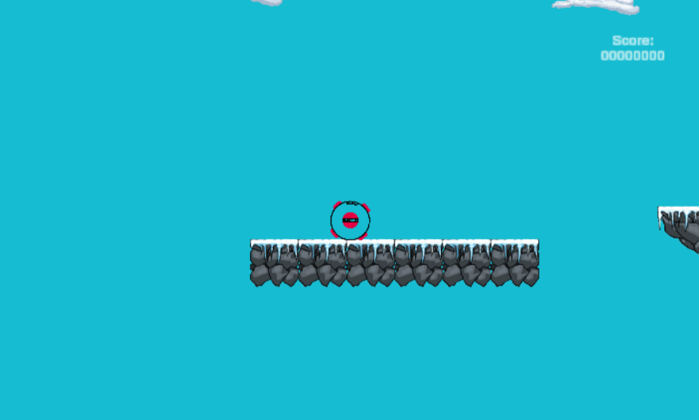
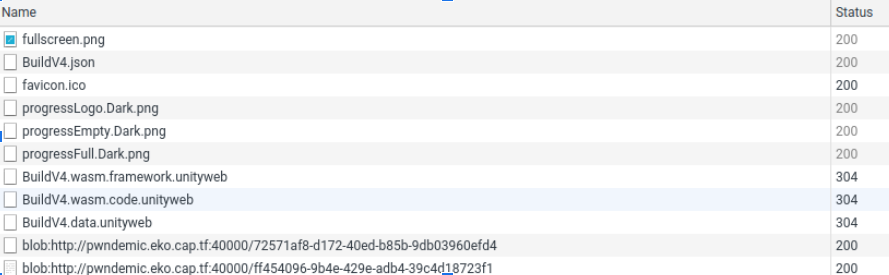
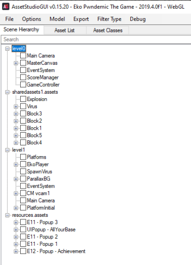
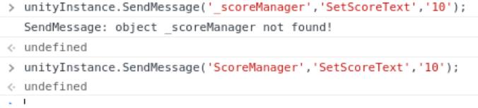
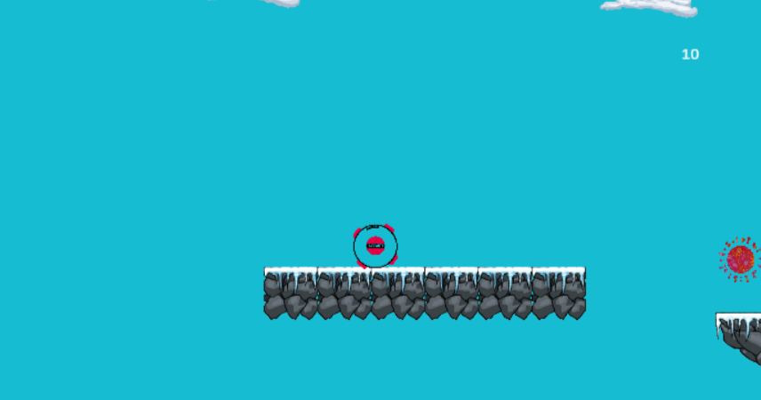
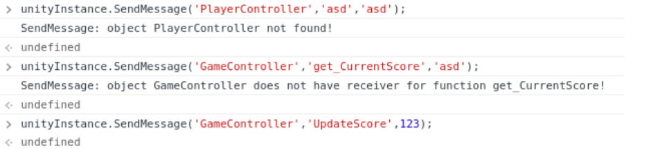
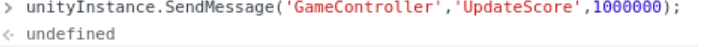
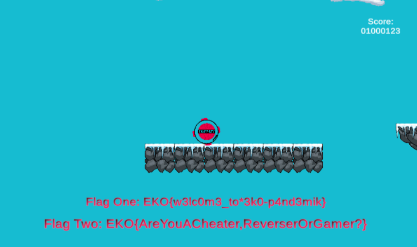

Challenge Data
- Name: Cheater
- Category: Misc
- Points: 442/500
- Worked together with: @ls_cabrera, @sebarodriguez
- Description: "It's time to dust off your gaming skills, or maybe your reversing skills? This is not an easy one, good luck trying to get a MILLION points"
Solution

The challenge was a link to a server hosting a game. By going to the webpage of the game an analyzing its traffic we realised that it was asking for 3 different and interesting resources:

The files where: BuildV4.wasm.framework.unityweb BuildV4.wasm.code.unityweb * BuildV4.data.unityweb
At the same time, by using the tool AssetStudioGUI, we found the data objects of the game: 
We started analyzing the downloaded files to see if we could get some useful information from there. We were able to list some objects/methods that were implemented, just by reading (in raw) the BuildV4.data.unityweb file:
^@p3^@Bezier3^@BezierTangent3^@Bezier1^@BezierTangent1^@knot^@ctrl1^@ctrl2^@ComputeSmoothControlPoints^@ComputeSmoothControlPointsLooped^@UnityVectorExtensions^@s0^@ClosestPointOnSegment^@ProjectOntoPlane^@AlmostZero^@SafeFromToRotation^@vA^@vB^@SlerpWithReferenceUp^@UnityQuaternionExtensions^@qA^@qB^@orient^@lookAtDir^@GetCameraRotationToTarget^@ApplyCameraRotation^@UnityRectExtensions^@Inflated^@78517443912BB49729313EC23065D9970ABC80E3^@Assembly-CSharp^@Assembly-CSharp.dll^@GameManager^@get_CurrentScore^@set_CurrentScore^@sceneIndex^@CleanMemory^@CleanResources^@UpdateScore^@player^@GameOver^@playButton^@finalScoreText^@currentScoreText^@_scoreManager^@txtUno^@txtDos^@m_Singleton^@m_CurrentScore^@backup^@CurrentScore^@ScenesNames^@START_MENU^@PLAY_SCENE^@GAME_OVER^@ParallaxEffect^@mainCamera^@parallaxEffectSpeed^@lengthSprite^@PlayerController^@IsInGround^@AddPoints^@platformLayerMask^@jumpForce^@moveSpeed^@motionX^@jump^@_rigidbody^@_circleCollider^@velocityZero^@_gameManager^@ScoreManager^@EnableScoreText^@DisableScoreText^@SetScoreText^@m_textMeshpro^@SpawnPlatforms^@CreateBlock^@blocks^@spaw
As you can see from there, ScoreManager was part of the list. Next to it had some itneresting names like DisableScoreText, SetScoreText, etc. These names sounded like method names, so our next test was try them. We opened a JS console of the game and tried these methods: 
Although it seemed to work, it really didn't : 
We could see that the score changed, but it wasn't taking actually working. So we thought that we maybe were dealing with the incorrect object.
Going back to the AssetStudioGUI, we realised there was another interesting object: GameController. Looking for this object in the previous image (with all the methods) we found that there was a GameManager which was close to a, most probably, method called UpdateScore. So we tried that: 
This time, the score seemed to be really updated.

We went for the 1kk: 
and.. 
For sure there should be a neat solution for this... but it worked :)